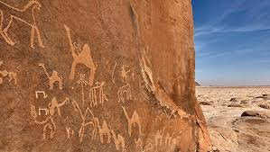
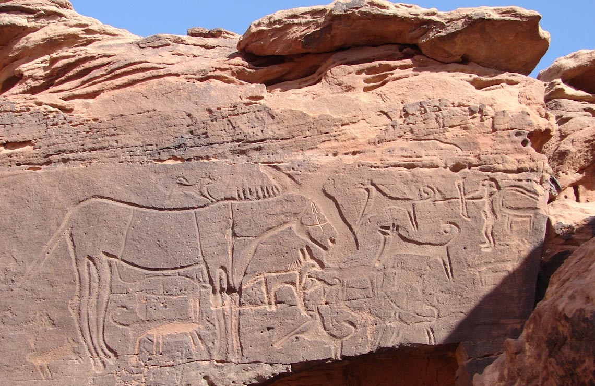
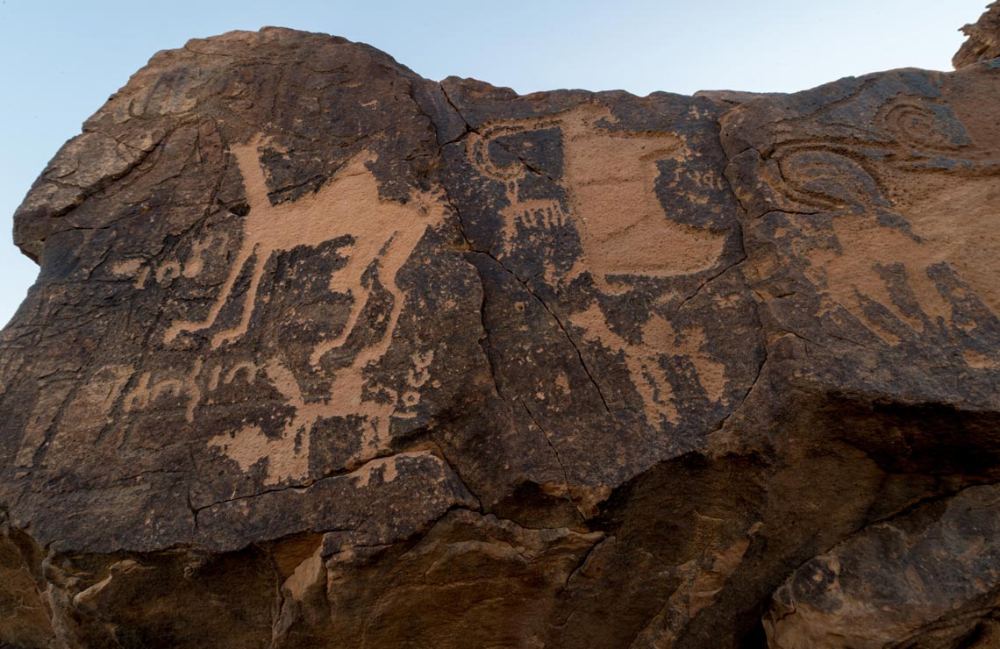

World Heritage Site
The rock art in the Ha’il region tells 10,000 years of history and is so significant it was added to the UNESCO World Heritage list. In Jubbat Ha’il these rock inscriptions can be found at Jebel Um Sanman and Om Sinman mountain. The site lies on an ancient lake bed partly concealed by the sand dunes of the Great Nefud desert. The west and south are surrounded by mountainous areas such as Um Sanman, Ghouwtah, Ash Shuwayhit and Unayzah.

Jebel Umm Sanman
This mountain, significant for its rock art, is 62 miles (100 km) northwest of Ha’il. It’s a landmark that dates back to 7000 BC located in the city of Jubbat Ha’il or Jubbah. Its historical significance earned it a place on the UNESCO World Heritage list as the ancient petroglyphs, which have stood the test of time, reveal so much about the culture and history of life in this area right back to the Stone Age, some of which are from the Thamudite era.
Jabal Shuwaymis
The site of rock petroglyphs at Shuwaymis, southwest of Ha’il is one of the most important archaeological sites and the most prominent in Saudi Arabia. These inscriptions tell historians so much about life in the Middle East going back thousands of years to the Neolithic period. The area is close to Kaa Alsebak, the region that witnessed the longest battle in the history of the Arabs, the war of Dahis and Al-Ghabra..
